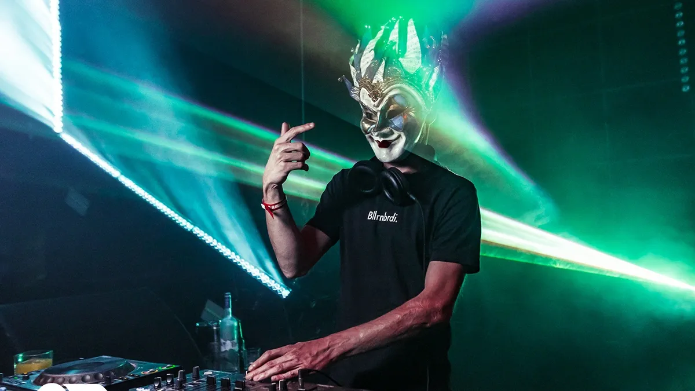

Boris Brejcha es un disc-jockey y productor alemán. Él mismo ha definido su estilo como una evolución del Minimal techno, al que ha denominado High-Tech Minimal y es actualmente conocido por ser uno de los exponentes más importantes del género.